This document is relevant for: Inf2, Trn1, Trn2, Trn3
Get started with Neuron Explorer#
Overview#
In this guide, you’ll capture a profile of your Neuron workload, launch Neuron Explorer, and upload the profile for interactive analysis.
By the end you will have:
Captured a system or device profile
Launched Neuron Explorer (browser or VS Code)
Uploaded and viewed your profile in the interactive timeline
Prerequisites#
A Trainium or Inferentia EC2 instance (e.g., trn2.48xlarge, inf2.xlarge) with the AWS Neuron DLAMI
SSH key pair (
.pemfile) for connecting to your instanceLocal machine with SSH client and a web browser (or VS Code)
Step 1: Connect and verify installation#
Launch an EC2 instance with a Neuron DLAMI. See the setup guide for details. Then, SSH into your EC2 instance and verify Neuron Explorer is installed:
neuron-explorer --version
If not installed:
sudo apt install aws-neuronx-tools
Step 2: Set up SSH tunneling#
Neuron Explorer serves a web UI on port 3001 and an API backend on port 3002. You access both from your local machine through SSH tunnels.
From your local machine, open the tunnels:
ssh -i ~/path/to/your-key.pem \
-L 3001:localhost:3001 \
-L 3002:localhost:3002 \
ubuntu@<instance-ip> -fN
|
Path to your EC2 key pair |
|
Forwards the UI port |
|
Forwards the API port |
|
Instance login (use |
|
Runs tunnel in background (no shell) |
Important
You must forward both ports. The UI on 3001 calls the API on 3002. If you only forward one, the page loads but shows no data. See Troubleshooting if you run into issues.
Step 3: Capture your profile#
Profile types at a glance#
Type |
What it captures |
When to use |
Output files |
|---|---|---|---|
System |
Runtime events, API calls, model loads, CPU/memory |
End-to-end execution flow |
|
Device |
Hardware-level NeuronCore instruction traces |
On-device compute bottlenecks |
Matched |
Both |
Combined system + device view |
Full optimization picture |
All of the above |
Note
Device profiles require a matched pair: the .neff and .ntff share a numeric hash in their filename (e.g., neff_395760075800974.neff pairs with 395760075800974_instid_0_vnc_0.ntff).
For instructions on how to capture a profile, see Capture Profiles in Neuron Explorer or Profile a NKI Kernel.
After profiling, ./profile_output will contain trace artifacts organized per process. Verify the output matches the Expected Output section.
Step 4: Launch Neuron Explorer#
On the EC2 instance, run:
neuron-explorer view
# Expected Output:
View a list of profiles at http://localhost:3001/
ctrl-c to exit
This starts the UI server on port 3001 (web interface) and the API server on port 3002 (data backend).
In your local browser, navigate to http://localhost:3001:
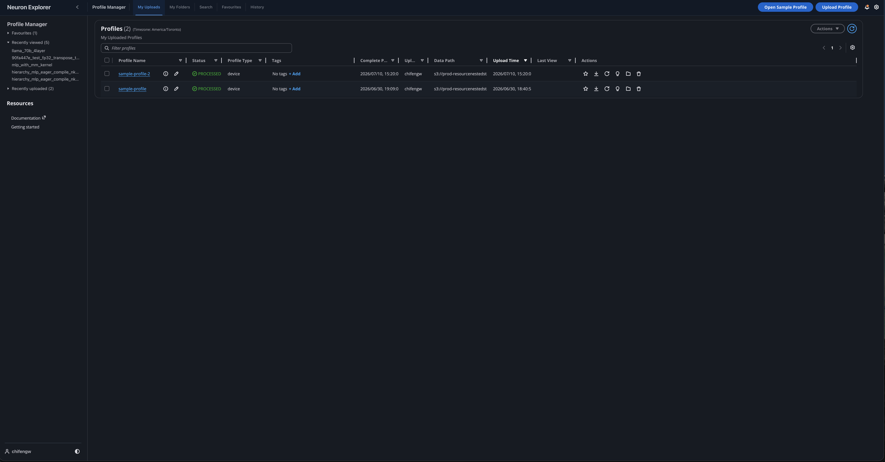
Using VS Code instead of the browser#
Install: Search for AWS Neuron Explorer (publisher: Amazon Web Services) in VS Code Extensions (Ctrl+Shift+X), or install from the VS Code Marketplace.
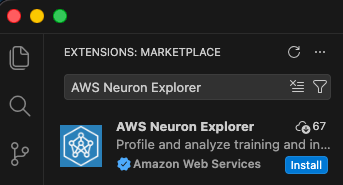
Option A — Local Binary (no tunnel needed)
From the Neuron Explorer view in VS Code, and after you have connected to the Neuron EC2 instance with Remote-SSH:
Configure the endpoint: click the extension in the left activity bar, select Local Binary on the bottom bar.
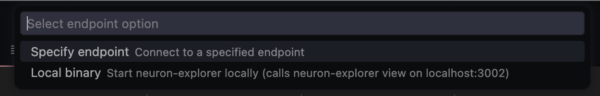
Access Profile Manager from the extension sidebar.
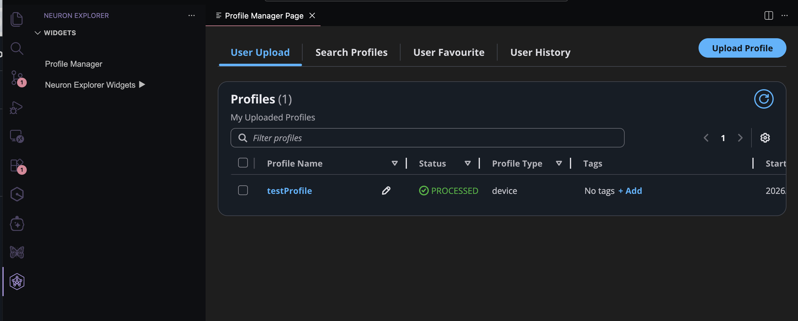
Click Upload Profile and paste the path to the profile directory on the instance.
Note
No SSH tunnel is required when running Neuron Explorer on the remote device. The extension starts the
neuron-explorerserver for you automatically when you select Local Binary.
Option B — Custom endpoint (SSH tunnel)
Ensure SSH tunnels are active (see Step 2: Set up SSH tunneling).
Configure the endpoint: click the extension in the left activity bar, select Endpoint on the bottom bar, choose Custom endpoint, and enter
localhost:3002.
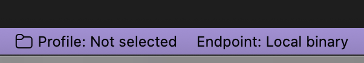
Access the Profile Manager from the Neuron Explorer extension sidebar.
Note
The VS Code extension uses the same API server. All upload methods (CLI, web UI) work interchangeably — once a profile is uploaded, it’s visible in both interfaces.
Step 5: Upload your profile#
Choose the method that fits your workflow:
Option A: CLI upload#
If you’re already SSH’d into the instance, this is the quickest path:
neuron-explorer view \
-d ./profile_output \
--ingest-only \
--display-name "my-profile-run"
Expected outcome: After processing, the CLI outputs a direct link to your profile. Open it in your browser (via the tunnel) to view.
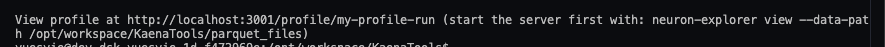
Useful flags:
Flag |
Description |
|---|---|
|
Skip device-level traces (faster processing) |
|
Reduce tracks for a cleaner view |
Option B: Web UI upload#
If your profile output is on the EC2 instance and you want to use the browser uploader locally, transfer the files first:
# Compress for faster transfer (recommended for large profiles)
# Run on EC2:
tar -czf profile_output.tar.gz ./profile_output
# Transfer to local machine:
scp -i ~/your-key.pem ubuntu@<instance-ip>:./profile_output.tar.gz .
tar -xzf profile_output.tar.gz
Use your local browser or VSCode to open
http://localhost:3001. The Profile Manager page is displayed.Click the Upload Profile button on the top right to open the upload dialog:
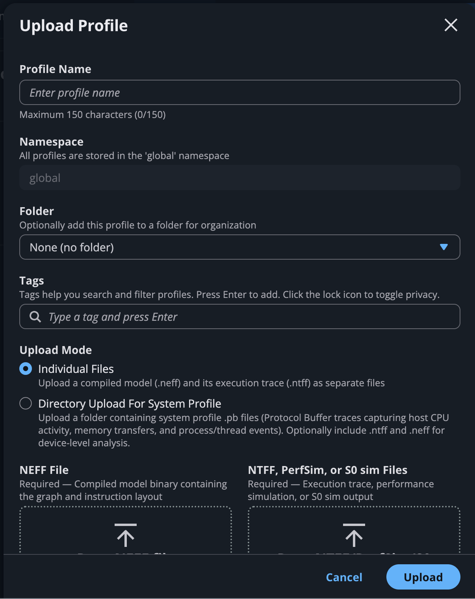
Enter a Profile Name (required).
Choose your upload method based on profile type:
For system profiles (or system + device): click Upload Profile and select Directory Upload For System Profile. Then select the directory containing your
.pbfiles (must includetrace_info.pb).
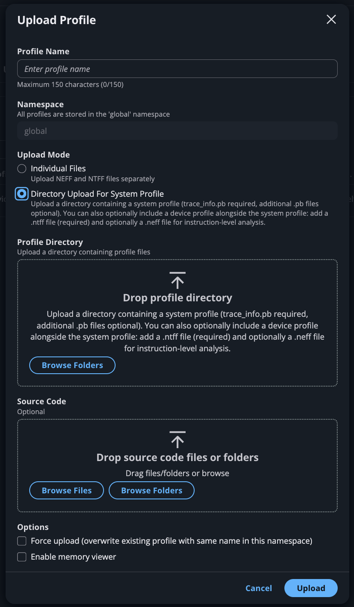
For device-only profiles: click Upload Profile and select Individual Files. Upload your
.neffand.ntfffiles in the designated boxes.
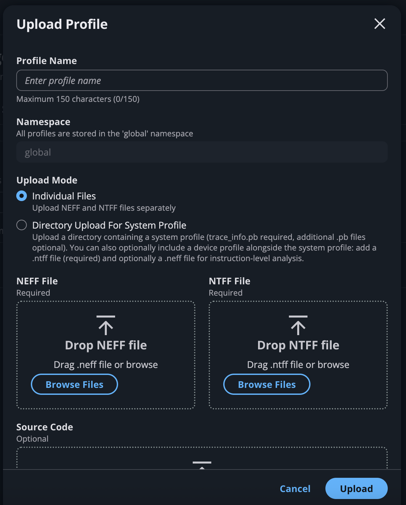
Expected outcome: The profile appears on the My Uploads tab. Click Refresh to check processing status. Once complete, click the profile name to open the interactive timeline.
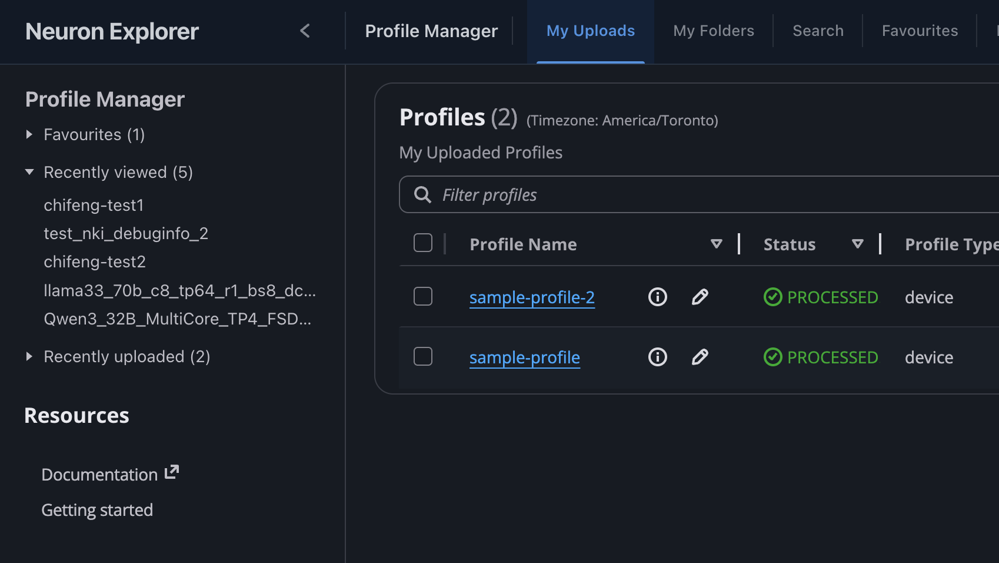
Note
Why two upload methods? Directory Upload requires a system profile (ntrace.pb + trace_info.pb). It does not work with device-only profiles. For device-only profiles (just .neff + .ntff), use Individual Files. If you have both system + device files, use Directory Upload as it picks up everything.
Option C: Export to JSON#
For programmatic analysis (custom scripts, coding agents), export to JSON. This generates system_profile.json and device_profile_model_<model_id>.json per compiled model.
neuron-explorer view \
--session-dir ./profile_output \
--output-format json \
--output-file ./integrated_trace.json
Quick text summary (no UI needed):
neuron-explorer view -d ./profile_output --output-format summary-text
JSON schema (system_profile.json):
The file contains event objects. It also includes mem_usage (sampled host memory) and cpu_util (CPU utilization per core).
{
"Neuron_Runtime_API_Event": {
"duration": 27094,
"group": "nrt-nc-000",
"id": 1,
"instance_id": "i-0f207fb2a99bd2d08",
"name": "nrt_tensor_write",
"timestamp": 1729888371056597613,
"type": 11
},
"Framework_Event": {
"duration": 3758079,
"group": "framework-80375131",
"instance_id": "i-0f207fb2a99bd2d08",
"name": "PjitFunction(matmul_allgather)",
"timestamp": 1729888382798557372
}
}
Note
Share your view with teammates. After you open a profile, Neuron Explorer encodes your current time range, selected event, and active annotation in the page URL. Copy the URL and share it to give others the same view with no additional setup. The shared URL only works for users connected to the same Neuron Explorer instance.
Organize profiles into folders#
Folders group related profiles — for example, every run from one experiment. Folders are private to you. A profile can belong to more than one folder. Folders support only one level, so you cannot nest one folder inside another.
To create a folder, open the Profile Manager page, select the My Folders tab, and choose Create Folder — or Create your first folder if you have none yet. Names are limited to 100 characters and cannot contain spaces; use underscores, hyphens, or dots instead.
To file profiles, go to the My Uploads tab and either choose the folder icon in a profile’s Actions column, or select one or more profiles and choose Actions > Add to folder. In the Add to Folder dialog, select an existing folder — or choose Create new folder… — and then choose Add. The upload form also has a Folder field, which defaults to None (no folder), so you can file a profile as you upload it.
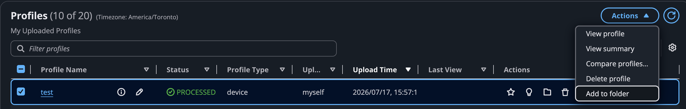
The My Folders tab lists each folder with the number of profiles it holds. Choose a folder name to open it and see those profiles in the same table the My Uploads tab uses, then use the My Folders breadcrumb to go back. From the My Folders tab you can also rename a folder with the edit icon beside its name, or delete folders by selecting them, choosing Delete, and confirming. To take a profile out of a folder, open the folder and choose the remove icon in the profile’s row, or select profiles and choose Actions > Remove from folder.
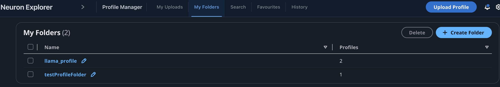
Note
Removing a profile from a folder, or deleting the folder itself, leaves the profile in place on the My Uploads tab. Deleting a folder takes its profiles out of that folder only; they remain in any other folders that contain them. Deleting a profile is a separate, permanent action, and it removes that profile from every folder that contains it. See Delete a profile.
Delete a profile#
When you no longer need a profile, delete it from the Profile Manager page to free up storage.
Before you start: The delete action is available only on the My Uploads tab. You can delete only the profiles that you uploaded. If you try to delete a profile that someone else uploaded, Neuron Explorer reports an error and leaves the profile in place.
To delete one or more profiles:
Open the Profile Manager page and select the My Uploads tab.
Start the deletion in one of two ways:
Choose the delete icon in the Actions column of a profile’s row to delete only that profile.
Select the checkbox for one or more profiles, choose Actions, and then choose Delete profile.
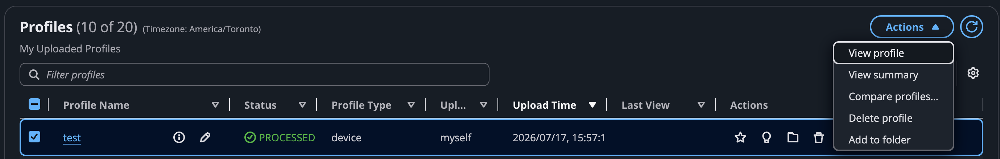
In the confirmation dialog, review the profiles to be deleted, type
deletein the confirmation field, and then choose Delete. The Delete button stays disabled until you type the confirmation text exactly.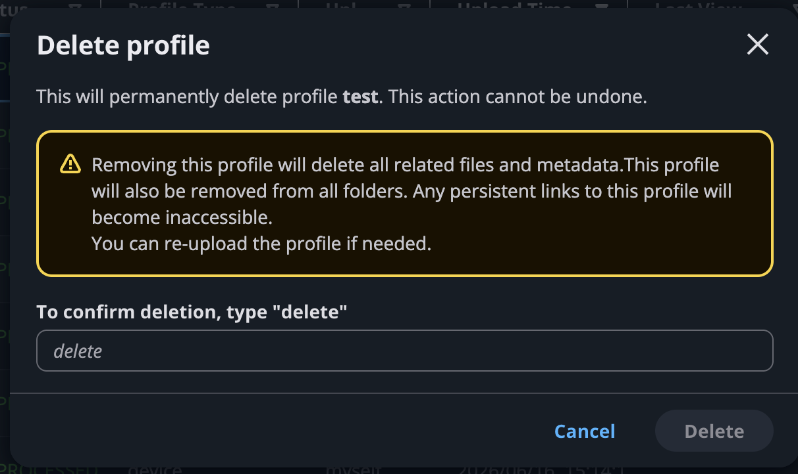
Expected outcome: A success notification confirms the deletion, and the profiles no longer appear on the My Uploads tab.
Warning
Deleting a profile is permanent and cannot be undone. Neuron Explorer removes the profile’s stored files and metadata, along with its tags, annotations, and folder membership, and makes any persistent link to the profile inaccessible, including the view links described earlier in this guide. To recover a deleted profile, upload it again as described in Step 5, and then recreate any tags and annotations.
Note
When you delete several profiles at once, each profile is deleted independently. If some deletions fail, Neuron Explorer deletes the rest and reports the names of the profiles it could not delete. Select those profiles and retry.
Troubleshooting#
For troubleshooting connection issues, upload errors, profiling results problems, and frequently asked questions, see the full Troubleshooting & FAQs guide.
Next steps#
Capture Profiles in Neuron Explorer — Full capturing and profiling reference (PyTorch, JAX, environment variables, CLI, filtering)
Neuron Explorer Full Documentation — Complete viewer and feature reference
Profile Parquet Schema Reference — Complete profile data reference, matching
neuron-explorer --show-profile-schema
This document is relevant for: Inf2, Trn1, Trn2, Trn3